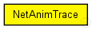

This documentation is released under the Creative Commons license
This documentation is released under the Creative Commons licenseRecords a NetAnim trace, using network-level modules and their connections. See http://www.nsnam.org/wiki/index.php/NetAnim
Note: NetAnim does not have a built-in layouter, and requires explicit node coordinates to be written into the file. This module takes node coordinates from module display strings; if there are no coordinates there, random coordinates will be generated. Thus, for good results it is recommended that you assign explicit coordinates to all network nodes.
Author: Andras
The following diagram shows usage relationships between types. Unresolved types are missing from the diagram.

The following diagram shows inheritance relationships for this type. Unresolved types are missing from the diagram.
| Name | Type | Default value | Description |
|---|---|---|---|
| enabled | bool | true | |
| filename | string | "netanim-trace.txt" |
| Name | Value | Description |
|---|---|---|
| display | i=block/control_s | |
| labels | node |
// // Records a NetAnim trace, using network-level modules and their connections. // See http://www.nsnam.org/wiki/index.php/NetAnim // // Note: NetAnim does not have a built-in layouter, and requires explicit // node coordinates to be written into the file. This module takes node // coordinates from module display strings; if there are no coordinates // there, random coordinates will be generated. Thus, for good results // it is recommended that you assign explicit coordinates to all network // nodes. // // @author Andras // simple NetAnimTrace { parameters: bool enabled = default(true); string filename = default("netanim-trace.txt"); @display("i=block/control_s"); @labels(node); }
This documentation is released under the Creative Commons license